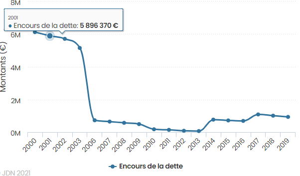
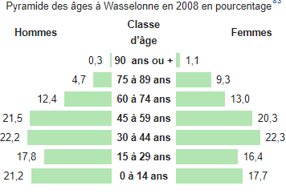

Diagnostic de l'organisation
Diagnostic Interne
Analyse fonctionnelle
Analyse fonctionnelle fonction accueil et secrétariat
La fonction d’accueil est dans la plupart des cas le point d’entrée des usagers de la commune, qu’il
soit par téléphone ou bien en face à face, la personne à l’accueil sera la première voie entendue, le
premier regard croisé. Elle est la première à devoir gérer d’éventuelles situations de tension ou de
dérapage. De plus la personne à l’accueil doit se charger d’aiguiller au mieux la personne reçue dans
les différents services de la mairie. Le secrétariat se charge de planifier les rendez-vous entre les
différents personnels de la mairie et/ou les usagers de la commune.
Analyse fonctionnelle fonction administration, état civil
La fonction formalité administrative s’occupe des démarches administratives telles que l’obtention et le
renouvellement de CNI, elle traite les demandes de passeport, les autorisations de sortie du territoire,
le recensement de la population, le recensement pour le service militaire, les inscriptions sur les
listes électorales et les inscriptions scolaires.
Analyse fonctionnelle fonction comptabilité
La comptabilité est un système d’organisation des données financières d’une organisation qui permet de
rendre compte de la situation financière de l’organisation. Voici le détail du processus de gestion. Une
facture est envoyée à la mairie, elle est réceptionnée par le service comptabilité puis prise en charge.
La facture est ensuite envoyée à la trésorerie de Wasselonne puis elle est acceptée ou refusée. La
facture payée est ensuite mise en attente, une confirmation est envoyée à la mairie. La mairie informe
l’entreprise en question, le paiement est accepté est l’argent qui est envoyé.
Analyse fonctionnelle fonction cadastre et urbanisme
La fonction cadastre est une fonction essentielle, au bon fonctionnement de la commune en effet elle
récences et délimite tous les titres de propriété foncière du territoire de Wasselonne. Le service de
l'urbanisme est chargé d'instruire toutes les autorisations du droit des sols et toutes les demandes
relatives à l'aménagement de son territoire.
Analyse fonctionnelle fonction service technique, espace vert, nettoyage, police municipale
La fonction de service technique s’occupe de l’entretien de la ville ainsi que de ses infrastructures.
Le service paysagiste s’occupe de l’embellissement de la ville notamment en aménageant des espaces verts
ou en s’occupant de la flore de la ville. Le service nettoyage s’occupe du nettoyage de la ville. Ces 3
services sont indispensables au bon fonctionnement de la ville car ils permettent de créer et de
maintenir la sécurité dans la ville ainsi que d’améliorer que le cadre de vies des usagers.
La chaine de valeur
La chaine de valeurs nous permet de décomposer l’entité en deux sortes d’activités : des activités
principales et des activités de soutien. Cette analyse interne nous permet d’analyser les potentialités
stratégiques de l’organisation à l’origine de la plus grande création de valeur. Soit ces facteurs clés
de succès qui explique un avantage concurrentiel.
Les activités principales sont les suivantes : la gestion des formalités administratives, en effet la
mairie doit assurer le recensement de la population, assurer les demandes de CNI, de passeport, de
mariage, la gestion des naissances. On peut aussi citer l’activité de l’embellissement de la ville,
activité qui occupe aussi une grande partie des ressources. On peut citer aussi l’activité de cadastre
et l’urbanisme qui permettent de délimiter les propriétés des terrains au niveau de la commune et
d’assurer que les travaux soient conformes aux règles.
Les activités de soutiens sont assurées dans la plupart des cas par des prestataires extérieurs, car la
mairie ne dispose pas des compétences spécifiques afin de les assurer en interne. On peut citer par
exemple l’infrastructure réseau et l’administration du réseau qui est déployé par un prestataire
externe. Cependant il existe un service de comptabilité, indispensable au bon fonctionnement de la
mairie.
Les facteurs clés de succès
La ville dispose d’une taille suffisante permettant d’avoir des services financiers, DGS et Services
techniques. La force de la commune est qu’elle détient une compétence générale, ce qui lui permet de
mener une véritable politique de proximité.
Analyse SWOT forces / faiblesses
Analyse SWOT du point de vue de l’attractivité de la ville.
| Forces |
Faiblesses |
- De nombreux commerçants et artisans
- Il existe de nombreuses infrastructures qui ont été mises en place pour les jeunes et
les familles (piscine, bike parc, city parc, skate parc, terrain de foot, piste
cyclable, sentier VTT).
- Développement commercial et industriel en augmentation
- Patrimoine culturel important
- Des associations pour les personnes âgées et pour les jeunes.
- La ville dispose de 2 écoles maternelles, 1 école primaire et 1 collège.
- Wasselonne se situe entre Strasbourg et Saverne, elle est très bien desservie par les
transports en commun. Cela permet d’habiter en campagne et de profiter de la ville.
- Stabilité politique, depuis 1977, la même liste remporte les élections
- Politique de proximité
|
- Certaines infrastructures sont vieillissantes.
- La fermeture de nombreux commerçant dans le centre-ville.
|
Analyse SWOT du point de vue de la mairie.
| Forces |
Faiblesses |
- Une organisation administrative souple
- Un environnement social stable et bon
- Une équipe qui se connaît depuis des dizaines d’années
- Excellente communication entre les différents services
- Des horaires de bureau
- L’absence de groupes de pression cohérents pouvant influencer les décisions ou les
discréditer
|
- Individualisation des services municipaux
- Service de communication territoriale moins visible dans l’organisation interne
- Difficulté à la numérisation des services de la mairie
|
Analyse des ressources et des compétences
|
Forces |
Faiblesses |
| Ressources |
Ressources tangibles |
- Ressources matérielles : mairie, ateliers communaux, serres, tour carrée, aire d’accueil
des gens du voyage, station d’épuration… ; investissements conséquents sur des routes,
trottoirs qui attirent des commerçants comme ALDI… ;
- Ressources financières : un budget net positif et un endettement faible.
|
- Ressources matérielles : Structures vieillissantes
- Ressources financières : dépendance de la communauté de communes
|
| Ressources intangibles |
- 28 conseillers municipaux, organisations certes hiérarchiques, mais avec une bonne
communication transversale, de même avec les 60 salariés.
|
- Résistance au changement parmi les salariés
|
| Compétences |
- Sens de la relation client réactive
- Compétences politiques des salariés dans l’aménagement de la ville (ex : soutien aux
commerçants du centre-ville pour éviter sa désertification)
|
- Peu de communication transversale entre les services
- Rigidité de la chaîne d’information, cloisonnement, individualisation services
municipaux
- Absence de communication avec les clients sur internet
|
Diagnostic externe
Analyse PESTEL
L’analyse PESTEL est un outil qui permet d’identifier des facteurs externes qui impactent l’activité
d’une organisation. Dans cette analyse nous différencions les points de vue de la ville et de la mairie.
Politique :
Mairie :
-
Il y a 2 listes politiques. ‘’Wasselonne avec vous et pour vous’’ et ‘’Wasselonne évolution’’. La
politique est très stable depuis 1970, la même liste remporte les élections
-
De nombreuses attaques personnelles lors des élections
-
Le taux de participation supérieur à la moyenne nationale de 48
Ville :
-
Grande rivalité avec Marlenheim qui est la deuxième plus grande ville de la Com Com
-
Grande quantité d’alliances avec les villages voisins
-
La ville possède un rôle clé dans le développement de la Com Com où elle est chef de Com Com
-
Une volonté des politiques de plus en plus importante en termes d’écologie et de développement
durable
-
De nombreuse manifestation de gilet jaune qui a perturbé le Traffic sur le contournement de la ville
-
Un centre de vaccination a été mis en place
Économique :
Mairie :
-
La dette de la ville est de 6 millions d’euros en 2004 et passe à 1 million en 2006 et reste stable
jusqu’en 2019 (900 000€). La dette par habitant est d’environ 160€ en moyenne nationale à 800€
-

Figure 1 : Évolution de la dette de Wasselonne (JDN)
-
Ouverture de nouvelle zone industrielle et commerciale en 2017
-
Taux de chômage à 10,7%, moyenne nationale. Chômage des 15-24 ans élevés, 20% en moyenne nationale à
8%
-
Taux d’intérêt très faible de plus, les banques ont confiance dans la capacité de remboursement des
mairies, ce qui permet d’emprunter de l’argent facilement
Ville :
-
Inflation en France, suscité par des facteurs exogènes, notamment la hausse des cours des matières
premières, les salaires ne suivent pas, il y a donc une baisse du pouvoir d’achat, qui brise la
consommation
-
Le budget de la ville augmente jusqu’en 2015 (4 445 000€) +3% par an puis se stabilise
Sociétal :
Mairie :
-
Population de 5 600 habitants en 2021, la population reste stable depuis les années 2000
-

Figure 2 : Pyramide des âges 2008 en % (Wikipédia)
-
Taux de natalité à 10,4% de 2013 à 2018
-
Taux de mortalité à 11,5% de 2013 à 2018
-
Graphique catégorie socioprofessionnelle : augmentation des retraités +5% et des agriculteurs + 2%.
Baisse légère de toutes les autres catégories socioprofessionnelles
Ville :
-
Préférence pour le développement de grande zone industrielle et commerciale à proximité des grandes
villes et très grande ville
-
Les usagers passent régulièrement la frontière pour faire les courses en Allemagne réputée pour
leurs produits moins chère
-
Mode du bio et local
Technologique :
Mairie :
- Développement des voitures électriques en France
- Digitalisation des mairies
Ville :
- Digitalisation des services administratifs
Écologique :
Mairie :
- Lois sur la pollution, notamment contre les véhicules diesel
Ville :
- Recyclage avec une déchèterie gérée par le select-home
- Risque d’inondation
- Risque de crue torrentielle
- Risque de tempête.
- Risque de tremblement de terre
- Risque de transport de marchandises dangereuses
Légal :
Mairie :
- Mise en œuvre du RGPD
- Respect des droits sur l’éducation, adaptation de l’école pour les personnes en situation de
handicap
- Loi ZAN (zéro artificialisation nette va rendre plus difficile l’augmentation de la population)
Analyse SWOT opportunités/menaces
Analyse SWOT du point de vue de la mairie
| Opportunités |
Menaces |
-
Politique de relance, certaines aides sont mises en place par l’État, la grande région,
le département, dans le but de relancer l’économie et de faciliter le financement de
nouveaux travaux
|
-
Suppression de la taxe d’habitation induisant ainsi une baisse des revenus pour la
commune et donc une baisse des investissements
-
La menace d’une reprise épidémique de la Covid19, notamment dans la région du Bas-Rhin.
Cela empêche le bon fonctionnement de la mairie et réduit la qualité des services
proposés
-
Loi ZAN (zéro artificialisation nette)
|
Analyse SWOT du point de vue de la ville
| Opportunités |
Menaces |
-
Suppression de la taxe d’habitation donnant aux usagers de la ville un meilleur pouvoir
d’achat, ce qui se ressentira sur le développement de la commune, car plus d’achats.
-
Ouverture d’un site Internet « Comm’une opportunité » permettant de mettre en lien les
porteurs de nouveaux projets avec leur future ville d’accueil. Ainsi, les porteurs de
projets pourront plus facilement s’installer là où ils le désirent et les communes
pourront revitaliser leurs centres-villes. Cela s’inscrit dans la volonté de revaloriser
le commerce de proximité.
-
La création de la Collectivité européenne d’Alsace, réunissant la région du Bas-Rhin et
du Haut-Rhin, aura pour but, entre autres, de renforcer le développement des relations
transfrontalières avec l’Allemagne et la Suisse. Elle permettra également de simplifier
l’administration des deux régions et donc de prendre des mesures plus adaptées,
efficaces et cohérentes
-
Peu de pollution
|
-
La menace d’une reprise épidémique de la Covid19, notamment dans la région du Bas-Rhin.
Surtout au vu de la situation en Allemagne où le gouvernement a décidé de durcir les
restrictions sanitaires. On peut s’attendre à de nouvelles restrictions pour les
commerçants.
-
D’importantes inondations ces dernières années
|
5+1 force de Porter
Rivalité entre les concurrents :
(Point de vue ville) : il existe une certaine rivalité entre les communes de la Com Com, historiquement
entre Wasselonne et Marlenheim, les deux communes ont adopté une stratégie de diversification ainsi
l’une empiète toujours sur les activités de l’autre. Plus récemment entre Westhoffen et Wangenbourg à
propos de l’emplacement de piste de descente.
(Point de vue liste municipale) : Il existe une rivalité entre les différentes listes électorales qui
amène un développement positif dans la ville.
Menace de nouveaux entrants :
(Point de vue ville) : La menace de nouvel entrant est faible, l’élargissement des cantons n’a pas eu de
répercussion sur les communes de la communauté de Mossig (Com Com de Wasselonne). De plus aucun village
voisin n’a les moyens ni les ambitions de concurrencer Wasselonne ou Marlenheim. Car il souhaite rester
''village''.
(Point de vue liste municipale) : La liste d’opposition peut gagner les élections et vice versa.
Contraintes légales imposées par l’état :
(Point de vue mairie) : Obligation de respecter et faire respecter les lois notamment lors d’évènements.
Règle covid, lois sur la fiscalité, la discrimination, l’école, le travail… Loi ZAN (zéro
artificialisation nette ce qui va empêcher l’augmentation de la population).
Pouvoir de négociation des fournisseurs :
(Point de vue ville) : Le pouvoir des fournisseurs est très faible, car il existe une multitude de
fournisseurs différents pour répondre à un besoin, de plus à partir d’un certain prix, les mairies ont
une obligation de procéder à un appel d’offres pour réaliser des travaux, recevoir une fourniture.
Pouvoir de négociation des clients :
(Point de vue liste municipale) : Les usagers peuvent élire une autre liste si la liste en place ne
convient pas à la majorité.
Menace des produits de substitutions :
(Point de vue mairie) : Il n’y a pas de menace au remplacement des mairies sur le court et moyen terme.
Une commune ‘’dirigée’’ par un algorithme de block Chaine serait envisageable à moyen long terme, mais
improbable.